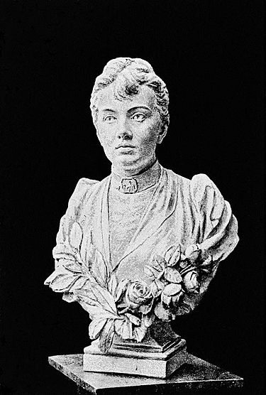

Sofja Kovalevskaja
Sofia Född 15 januari 1850 i Moskva i Ryssland , död 10 februari 1891 i Stockholm , var en rysk matematiker och skönlitterär författare.
Hon levde i Sverige från 1881, där hon tre år senare utnämndes till professor och blev då den första kvinnliga professorn i Europa.
Biografi
Hon studerat matematik vid flera universitet i Tyskland : Heidelberg, Berlin och Göttingen,efter sin utbildning i Ryssland.
Hon studerade delvis i Göttingen, men speciellt i Berlin för Karl Weierstrass , som var tvungen att undervisa henne privat då det var förbjudet för kvinnor att delta på offentliga föreläsningar i matematik. Hon uppnådde därigenom sin doktorsgrad 1874, som hon avlade i Göttingen.
Hon flyttade till Sverige 1881 och på grund av sin stora begåvning kallades hon till Stockholms högskola för en lärartjänst av Gösta Mittag-Leffler där hon arbetade från 1883. År 1884 lyckades Mittag-Leffler ordna en professur åt henne vid Stockholms högskola och hon blev då Sveriges första kvinnliga professor och världens andra kvinnliga matematikprofessor, efter Maria Gaetana Agnesi (som dock aldrig tillträdde sin professur). Det är att märka att Stockholms högskola vid denna tid var privat och att hennes utnämning inte innebar något genombrott för kvinnors möjligheter att nå ämbeten på lika villkor som männen vid statliga högskolor. Hon arbetade bland annat med differentialekvationer.
Under 1888 vann hon det prestigefyllda Prix Bordin, som utdelades av Franska vetenskapsakademien, för sin matematikavhandling Om en fast kropps rotation kring en fast punkt, som ansågs hålla så hög klass att hon belönades med den dubbla prissumman.
Kovalevskaja blev 1885 föreslagen till inval i Kungliga Vetenskapsakademien, vilket flera av ledamöterna motsatte sig på grund av att hon var kvinna. Den ständige sekreteraren Georg Lindhagen menade att detta skulle gå emot stadgarna där det klart och tydligt stod "man" (trots detta hade man gjort flera undantag från detta alltsedan Eva Ekeblad valdes in 1748). 1887 invaldes hon i det nybildade Sällskapet De 17 där Gösta Mittag-Leffler hade deltagit som en av grundarna och som dessutom var sällskapets förste sekreterare. Tillsammans med Anne Leffler, syster till Gösta Mittag-Leffler, invaldes Kovalevskaja också 1885 i Nya Idun.
Hon dog 1891 i Stockholm av influensa (under den pågående pandemin), förvärrad av lunginflammation, och är begraven på Norra begravningsplatsen i Solna kommun.

Sofja i filmer
Kovalevskaja har varit ett ämne i tre filmer och TV serier.
- Sofya Kovalevskaya (1956).
- Berget på månens baksida (1983).
- Sofya Kovalevskaya (1985 TV).